注意：有些中药有效成分TCMSP并没有，严格应该增加文献获取
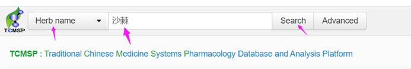
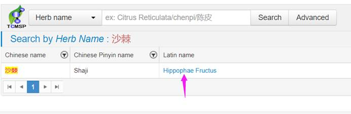
口服生物利用度（oral bioavailability, OB）是指制剂中的药物被吸收进入人体循环的速度和程度，反映药物进入人体循环的药量比例，高口服生物利用度通常是确定活性分子作为药物的关键指标。类药性（drug-likeness，DL）是指化合物与已知药物的相似
性，具有成为药物的可能，有助于优化药代动力学和药物性质，中药中类药性化合物的类药性选择标准为0.18。评价化合物的吸收、分布、代谢、排泄体内过程，以 OB ≥ 30 % 和 DL ≥ 0.18 为活性化合物的筛选条件，
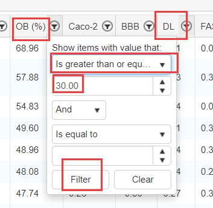
筛选出 TCMSP 中活性较高的化合物。
共33个成分，如下
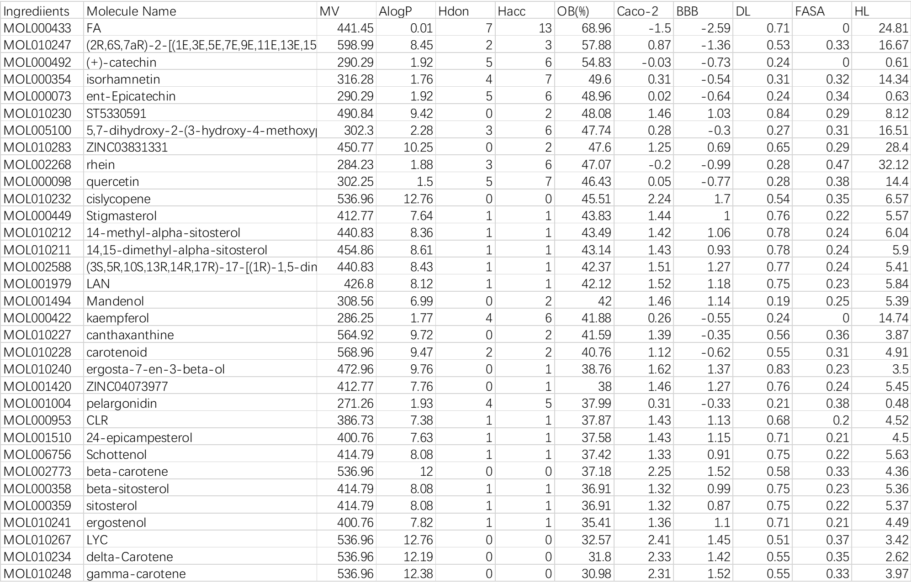
另外还有其他网站可以获取
打开网页，空白地方右击，查看源代码
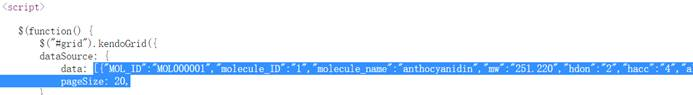
从中括号开始复制到pagesize，本来是中括号开始中括号结束
但太长了，所以一会删除
打开网页
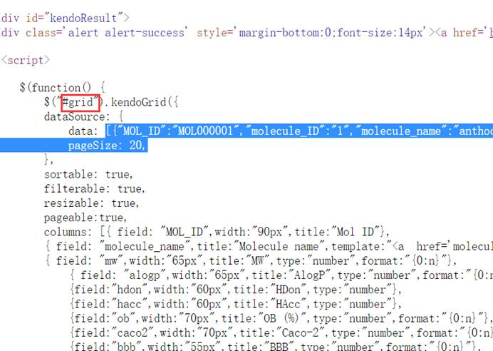
找到有grid字符的位置，从中括号开始到中括号结束
可以用查找功能
有的几个表格的会有grid2，grid3等，看后面的keywords即可知道是哪部分数据。
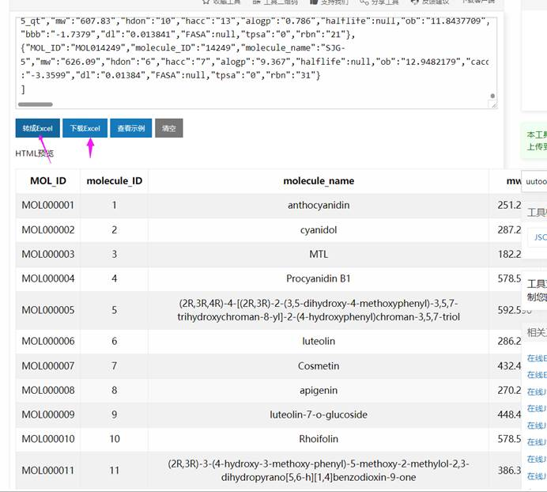
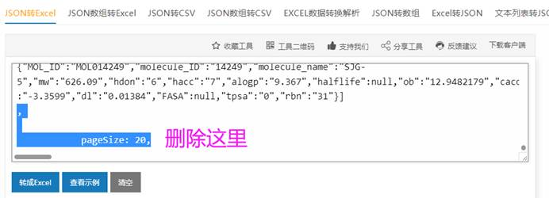
下载即可。
https://pubchem.ncbi.nlm.nih.gov/
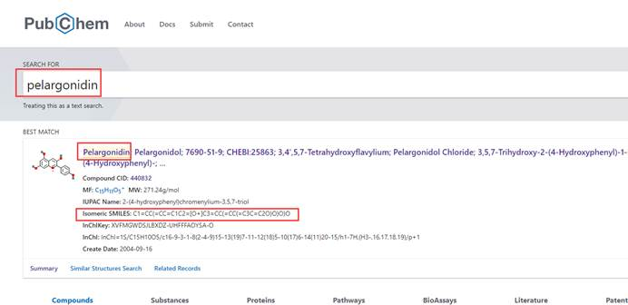
C1=CC(=CC=C1C2=[O+]C3=CC(=CC(=C3C=C2O)O)O)O （每个都复制到excel化学成分的最后）
http://www.swisstargetprediction.ch/
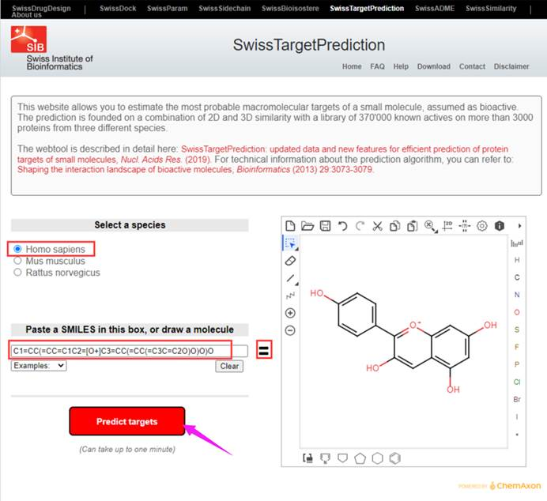
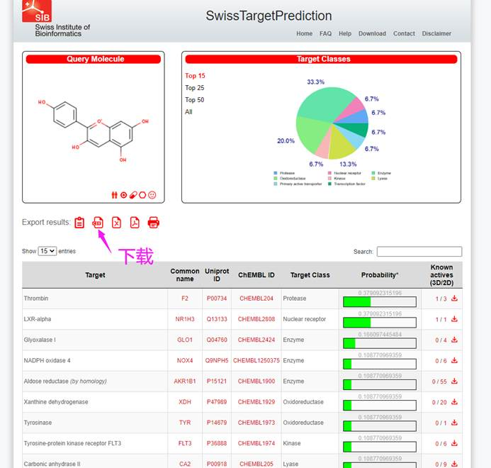
Probability>0的
依次把成分对应的都同样找出来
分别建立excel表格，要的是common name
全部整理好后，把excel合并成一个，命名，主要成分的靶点
本身也有target提供，但有的没有。并且相对麻烦。
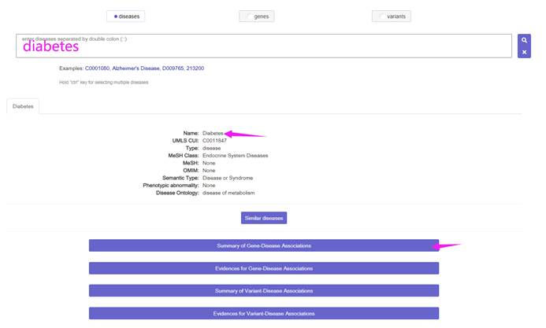
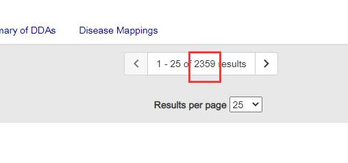
下载即可
需要学校邮箱注册
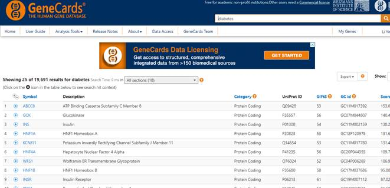
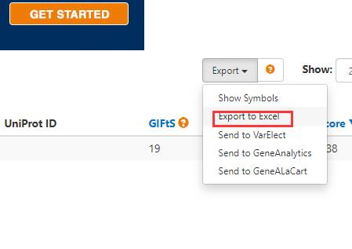
Genecards的基因比较多，可以进行筛选。因为CS网络大于2000个基因会非常慢，所以可以根据relevance score进行筛选，标准自己定，要说明。
若靶点过多则设定分值大于中位数的靶点为T2DM的潜在靶点（设定分值大于中位数的靶点为T2DM的潜在靶点，分值最大值为210.16，最小值为0.19，中位数为25.07，设定分值大于中位数的靶点为T2DM的潜在靶点，）
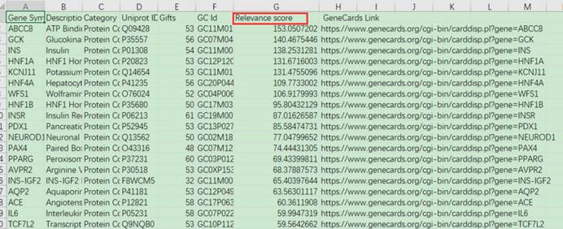
获取疾病基因的方法很多。另外还有文献等。
最后要把这些基因进行合并
有文献不一定合并，也有交集（更好，确定性更强）
看总基因数目
韦恩图即可
http://www.bioinformatics.com.cn/
这一步主要还是可视化网络
另一个主要功能是筛选关键基因，做分子对接（第八步）
用的是交集基因
dock系列的结合能评判标准为：通常情况下结合能越小，结合作用越好。结合能大于-4kcal/mol表明配体和受体结合作用较差，结合能在-4~-7kcal/mol表明配体和受体结合作用中等，结合能小于-7kcal/mol表明配体和受体之间结合能力较强。我们可以以此来分析所对接分子的效果。